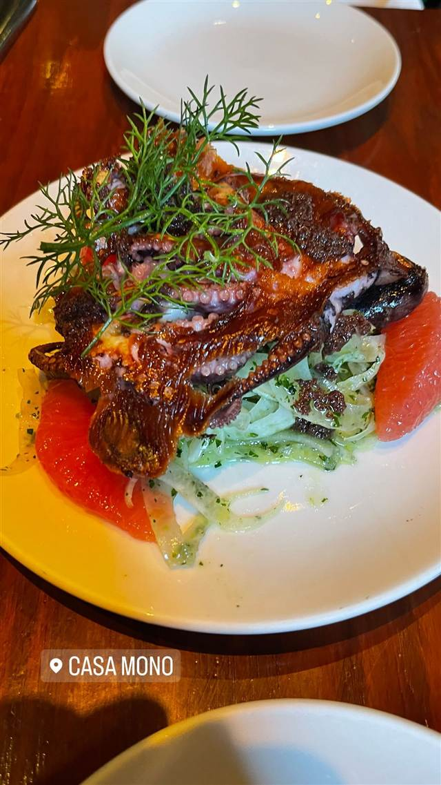
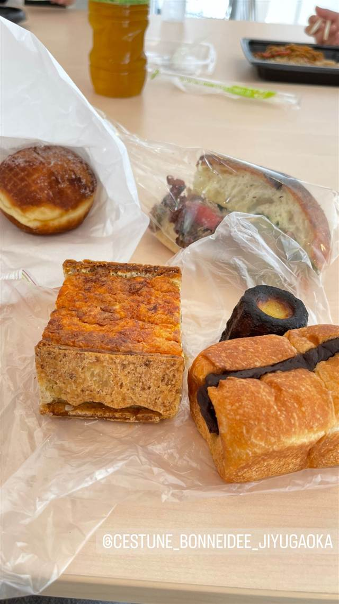
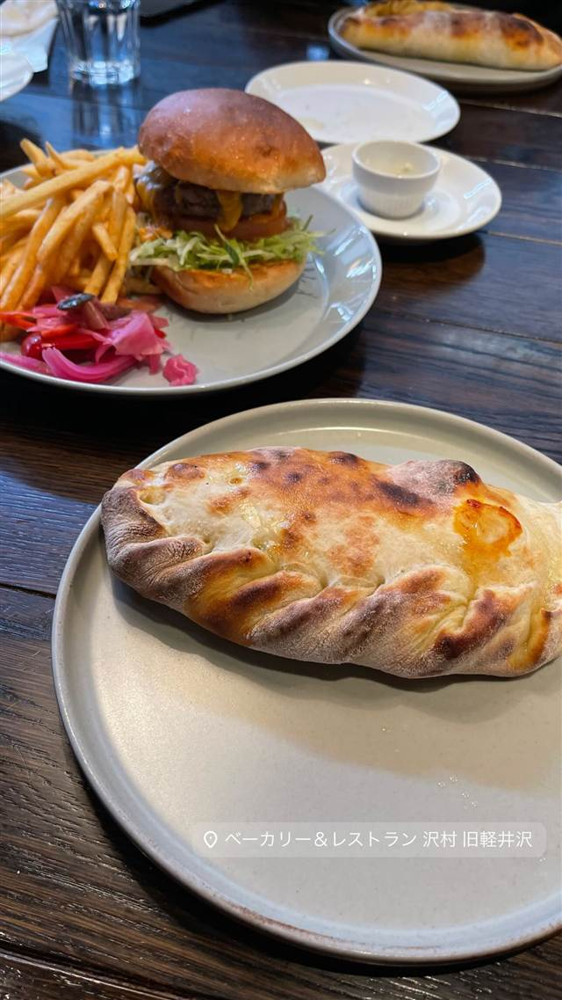
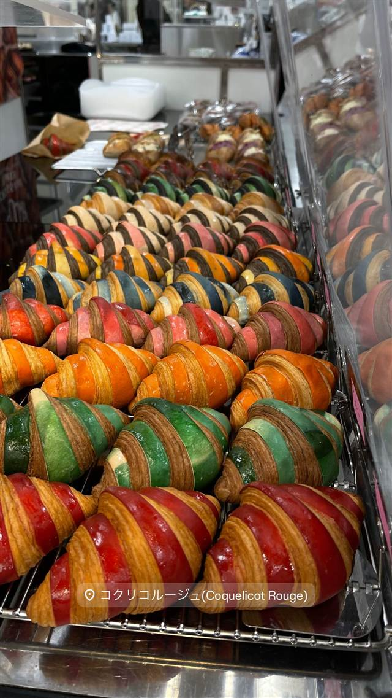
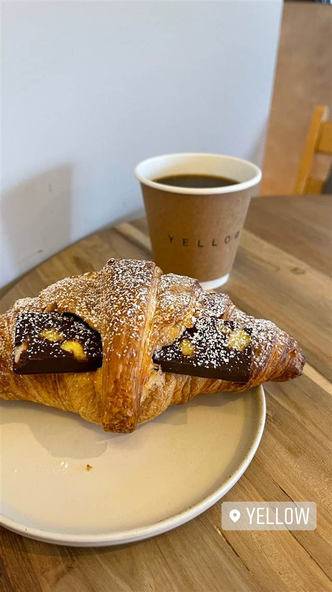

パン · ベーカリー · ニューヨーク
Casa Mono
2009年から毎年ミシュラン一つ星のタパスバー、骨髄トーストが名物
CASA MONO
2003年、スペイン・コスタブラバ出身のシェフ、アンディ・ヌッサーがマリオ・バターリらとアーヴィング・プレイスに開いたタパスバー。2009年から毎年ミシュラン一つ星を獲得し続けている、手頃な価格で楽しめる星付き店。
REVIEWS
世間の評判
4.2Googleマップ
少量のタパスと予約の取りにくさ
- タパスは少量で複数の皿をシェアして楽しむスタイルという声が多い
- タパスは料理の量の割に値段が高いという不満を感じる人が一定数いる
- 人気店のため予約をしていても待たされることがあるという声もある
Tripadvisor
| 創業 | 2003年開業 |
|---|---|
| 系譜 | シェフのアンディ・ヌッサーはスペイン・コスタブラバ出身。地元レストランでの皿洗いから料理の道に入り、マリオ・バターリの1号店「ポー」やその後の名店「バボ」でシェフを務めた経歴を持つ |
| 看板 | スペイン・コスタブラバの料理に着想を得たタパス各種 |
| 掲載・評価 | 2009年にミシュラン一つ星を獲得し、以降毎年獲得を継続。2015年にはニューヨーク・タイムズ紙で三つ星評価 |
| どこから | 海外 |
| 予算 | 夜 $30～$70+ |
| 予約 | 予約可 |
| 場所 | 14th St-Union Sq / Union Square 52 Irving Place, New York, NY (Gramercy Park), USA |
| メモ | アーヴィング・プレイスの角地に立地。姉妹店「バー・ハモン」が隣接する |
食べたもの：タコのグリル / 骨髄とトースト
NEARBY
近い店・同じ系統の店
-
 ベーカリー 自由が丘駅
baguette rabbit 自由が丘店（バゲットラビット）
石臼自家製粉の小麦で2日仕込む看板バゲット、金賞受賞
昼 ～¥999 夜 ～¥999
ベーカリー 自由が丘駅
baguette rabbit 自由が丘店（バゲットラビット）
石臼自家製粉の小麦で2日仕込む看板バゲット、金賞受賞
昼 ～¥999 夜 ～¥999
-
 ベーカリー 六本木
bricolage bread & co.（六本木ヒルズけやき坂テラス店）
大阪のパン屋と西麻布フレンチ、ノルウェーの3者が生んだ全粒粉パン
昼 ¥1,000～¥1,999 夜 ¥1,000～¥1,999
ベーカリー 六本木
bricolage bread & co.（六本木ヒルズけやき坂テラス店）
大阪のパン屋と西麻布フレンチ、ノルウェーの3者が生んだ全粒粉パン
昼 ¥1,000～¥1,999 夜 ¥1,000～¥1,999
-

ベーカリー 自由が丘 C'EST UNE BONNE IDEE 自由が丘店 店名は仏語で「それはいいアイデアだ」の意、国産小麦の食パン 昼 ¥1,000～¥1,999 夜 ¥1,000～¥1,999 -

ベーカリー 軽井沢 ベーカリー&レストラン 沢村 旧軽井沢 隣接工房の薪窯と石臼製粉で焼き旧軽井沢店だけで焼きたてパンが手に入る 昼 ¥2,000～¥2,999 夜 ¥2,000～¥2,999 -

ベーカリー 伊勢市駅（車約5分） COQUELICOT ROUGE（コクリコルージュ） 厳選バターを使い分けて焼く、SNSで話題のカラフルなクロワッサン 昼 ¥1,000～¥1,999 夜 ¥1,000～¥1,999 -

ベーカリー 池ノ上 YELLOW CAFE 希少な「%ARABICA」豆を使った焼きたてクロワッサン 昼 ¥1,000～¥1,999